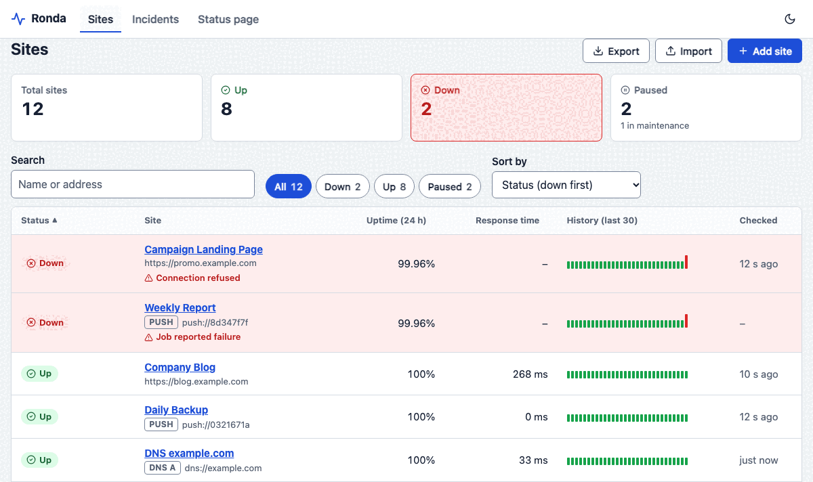
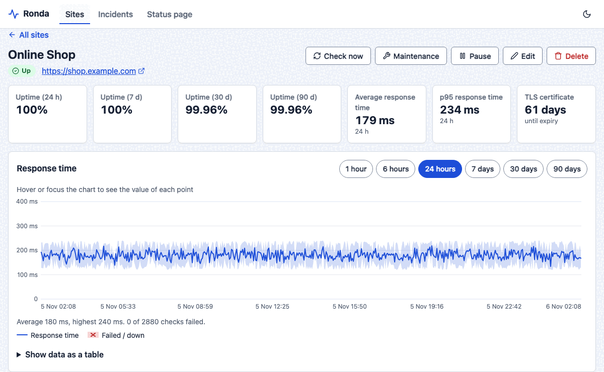
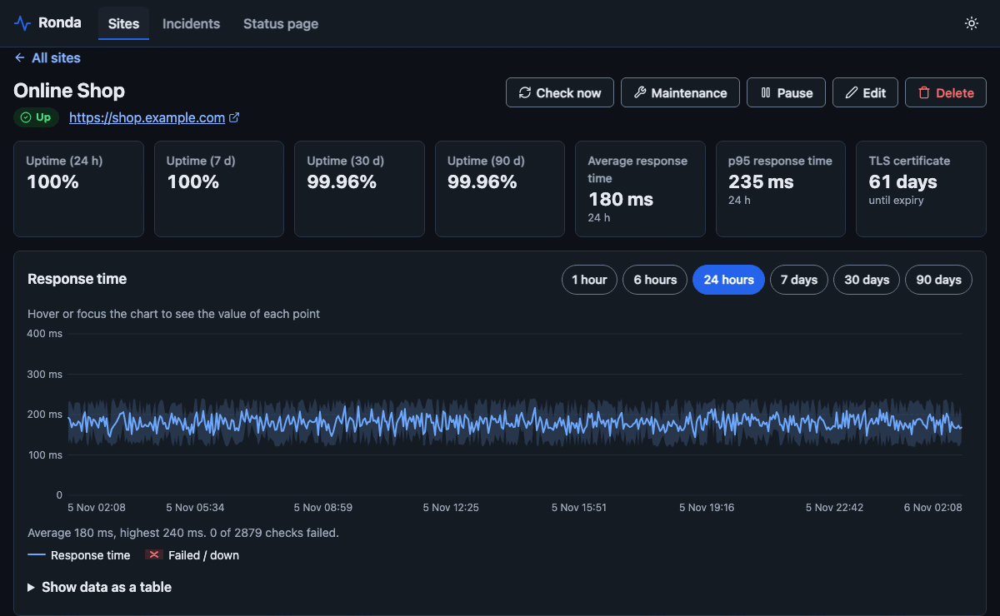
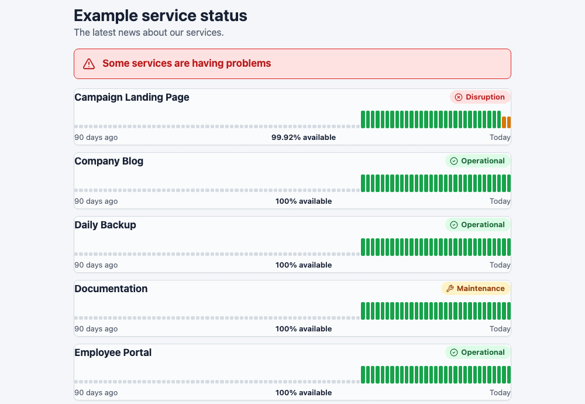
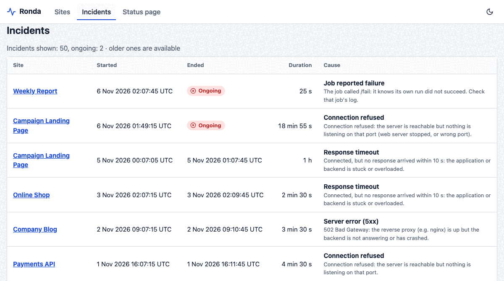
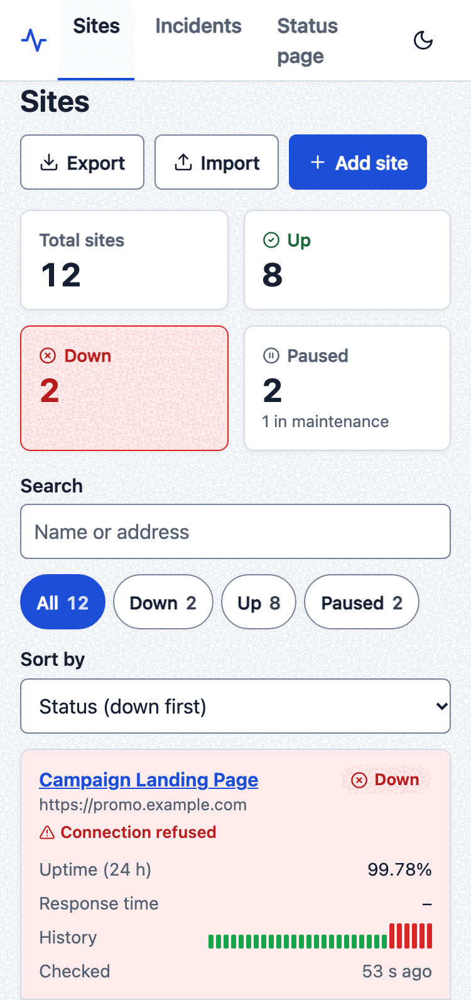

Open source uptime monitor
Watch your sites from the outside. Get a Telegram message when one goes down.
Ronda is a self-hosted monitor in one static binary with no dependencies. It checks like a visitor does and tells you the cause, not just “down”.
- MIT licence
- single binary
- English / Indonesian

Why outside?
A monitor that runs on the server it watches dies with that server, and then nobody tells you. A check made from inside the server, through a local nginx for example, cannot see DNS, CDN, certificate or firewall problems either.
Run Ronda on a different machine. A small VPS elsewhere is enough. Then every check meets what a visitor meets. Ronda can also ping an outside service, so you hear about it if Ronda itself dies.
- DNSLook up the name
- TCPOpen a connection
- TLSCheck the certificate
- ResponseStatus, text, time
- Every check opens a new connection and goes through all four, like a new visitor.
What it does
Everything is configured from the dashboard, the CLI or the API, while Ronda runs.
-
Checks that name the cause
HTTP(S), TCP port and DNS record checks. The alert says why: DNS, refused, timeout, certificate, Cloudflare 52x, HTTP 5xx, missing keyword. By default, down means three failures in a row, after Ronda has checked that its own network is up.
-
Cron and backup monitors
The job calls Ronda after it succeeds. Silence means failure: no ping within the schedule plus a grace period, and you get an alert.
-
Telegram alerts and bot
Bulk outages arrive as one digest. “Still down” reminders come at 1 h, 6 h and 24 h, then daily. Check, pause, add or remove sites from chat. An optional JSON webhook is there too.
-
Public status page
Off by default. For each site you choose, it shows the name, status, 90-day uptime and recent incidents. URLs and technical details never leave.
-
Maintenance windows
Start one before a deploy, or set weekly windows for a nightly job. No checks and no alerts during the window. When it ends, the site is checked again by itself.
-
Certificate warnings
A message at 14, 7, 3 and 1 days before a certificate expires. You can change the days. An expired certificate counts as down.
-
Daily and weekly reports
A summary on Telegram: uptime, incidents, certificates expiring soon, slowest sites. Off until you set a time. Permanent incident archive, plus export and import of your sites.
-
Time zones and two languages
Any IANA time zone, with daylight saving followed, so a 02:00 window stays at 02:00. The dashboard, alerts, reports and bot speak English or Indonesian.
-
Careful by default
Passwords are stored only as a PBKDF2 hash. Changes need a CSRF token. A strict CSP applies. A guard refuses private and link-local addresses unless you allow them for a site. It listens on 127.0.0.1 until you say otherwise.
What it is not (yet): it has one admin account, one vantage point (a partly broken network on the monitor’s side can cause false alerts), Telegram-only recipients and no on-call escalation. The full list is in the README.
Small on purpose
Nothing to install first, nothing to keep patched next to it. The dashboard is inside the binary.
- 1static Go binary, about 9 MB
- 0third-party dependencies: Go standard library only
- < 4 MBDocker image, built
FROM scratch - 2image architectures: amd64 and arm64
See it
These are screenshots of the live demo, which runs on synthetic data. Open it and click around.





Works on a phone
On narrow screens the tables become cards. Status is shown as an icon and a word, never by colour alone. The dashboard is usable from the keyboard and respects reduced motion.
Install in a minute
Pick one. These commands assume release v0.1.0 has been published.
Docker
A multi-architecture image (amd64, arm64) on GitHub’s container registry. It runs as an unprivileged user with a read-only root filesystem.
curl -fL -o config.json https://raw.githubusercontent.com/wisnuvb/ronda/v0.1.0/deploy/config.example.json
docker run --rm ghcr.io/wisnuvb/ronda:latest gen-token # a random api.token; put it in config.json (leave data_dir as /var/lib/ronda)
docker run -d --name ronda --restart unless-stopped \
-p 127.0.0.1:9191:9191 \
-v "$PWD/config.json:/etc/ronda/config.json:ro" -v ronda-data:/var/lib/ronda \
--read-only --cap-drop ALL --security-opt no-new-privileges:true \
ghcr.io/wisnuvb/ronda:latestPublish the port to loopback only, as above, and put a reverse proxy with TLS in front of it.
Linux server (systemd)
Download the release on the server, check its checksum, then run the installer. The installer is safe to run again, migrates older installs and puts the previous binary back if the new one is not healthy.
curl -fLO https://github.com/wisnuvb/ronda/releases/download/v0.1.0/ronda-v0.1.0.tar.gz
curl -fLO https://github.com/wisnuvb/ronda/releases/download/v0.1.0/SHA256SUMS
sha256sum -c SHA256SUMS
tar xzf ronda-v0.1.0.tar.gz && cd ronda-v0.1.0
./install.sh --check # read-only: can this host run Ronda?
sudo ./install.sh --set-passwordPrefer to build it yourself? make release builds the same tarball (it needs Go and runs the tests first), and make deploy HOST=user@server copies it over SSH and installs it.
Try it locally first
Starts the dashboard with synthetic data and no login, only on 127.0.0.1. Needs Go 1.24 or newer.
make demo # open http://127.0.0.1:9191Questions
Does it phone home?
No telemetry and no update check. Ronda connects only to what you configure: the sites you monitor, the Telegram API, your webhook and your heartbeat address.
One more is on by default. Before it declares a site down, it opens a plain TCP connection to 1.1.1.1:443 and 8.8.8.8:443 to make sure its own network works. Set control_addrs to [] to turn that off.
What happens if the server Ronda runs on dies?
Nobody can tell you, because the messenger died too. That is why Ronda can send a heartbeat: set heartbeat_url to an outside service that raises an alarm when pings stop. Pings also stop when checking has stalled, so a process that is alive but not working triggers it as well.
Run Ronda on a different machine than the one it watches.
Can it monitor internal services?
Yes, if Ronda can reach them. Loopback, private and link-local addresses are refused by default, so the dashboard cannot be used to scan your network. Turn on allow_private for the sites that need it. The Telegram bot cannot turn it on.
Is there a hosted version?
No. You run it yourself, on your own machine. It is free and MIT licensed.
Which languages does it speak?
English and Indonesian: the dashboard, Telegram and webhook messages, reports and the bot. One instance uses one language. The command line is English only. A missing translation falls back to English, and the README explains how to add a language.
How do I contribute?
Issues and pull requests are welcome on GitHub. Start with CONTRIBUTING.md. Please report security problems privately, as described in the security policy.
See it before you install anything
The demo is a read-only dashboard with synthetic data. No sign-up.